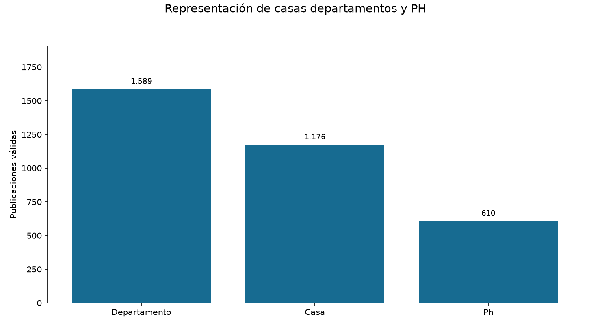
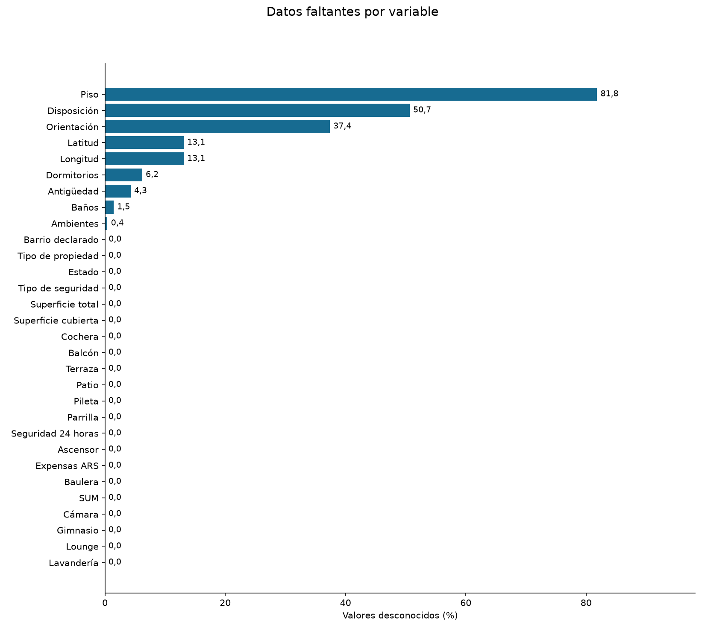
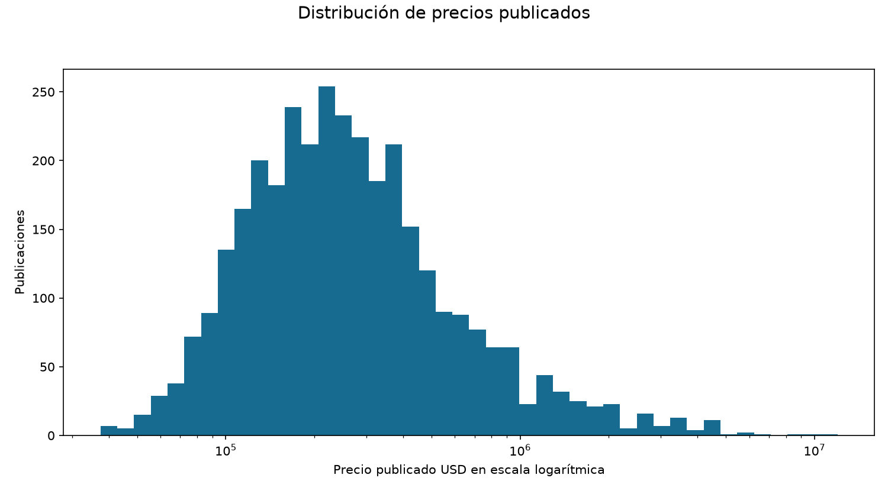
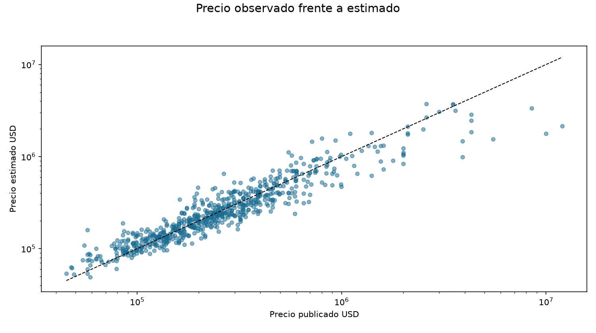
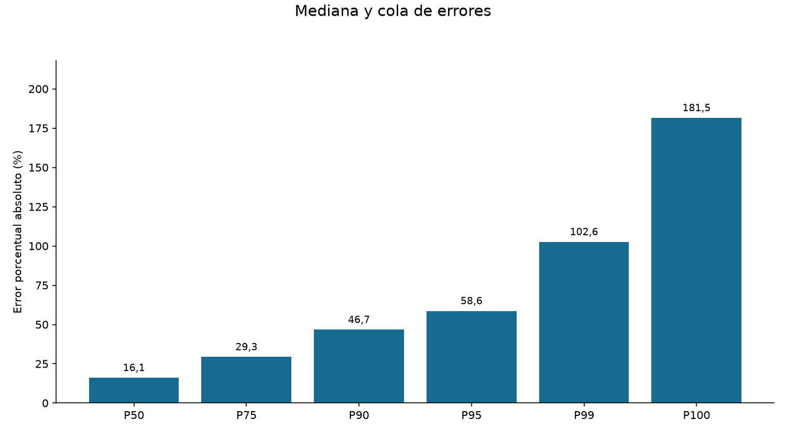
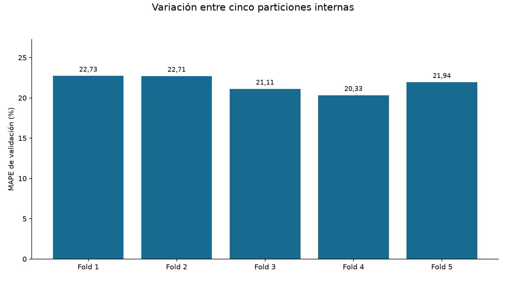
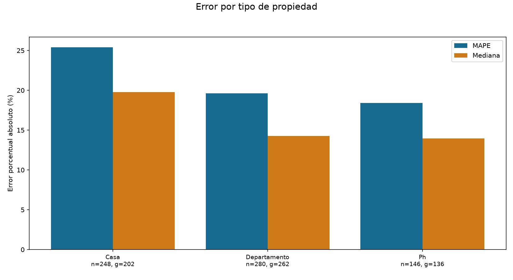
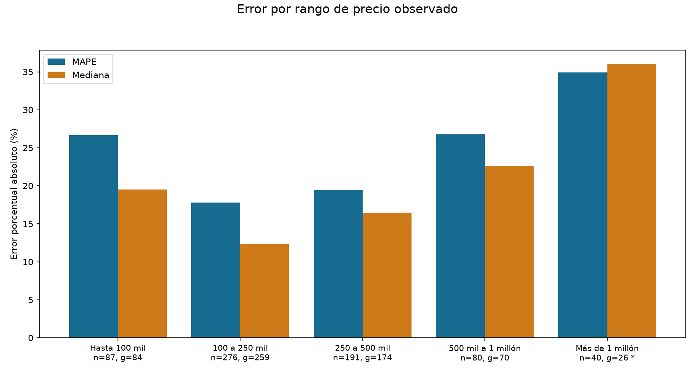
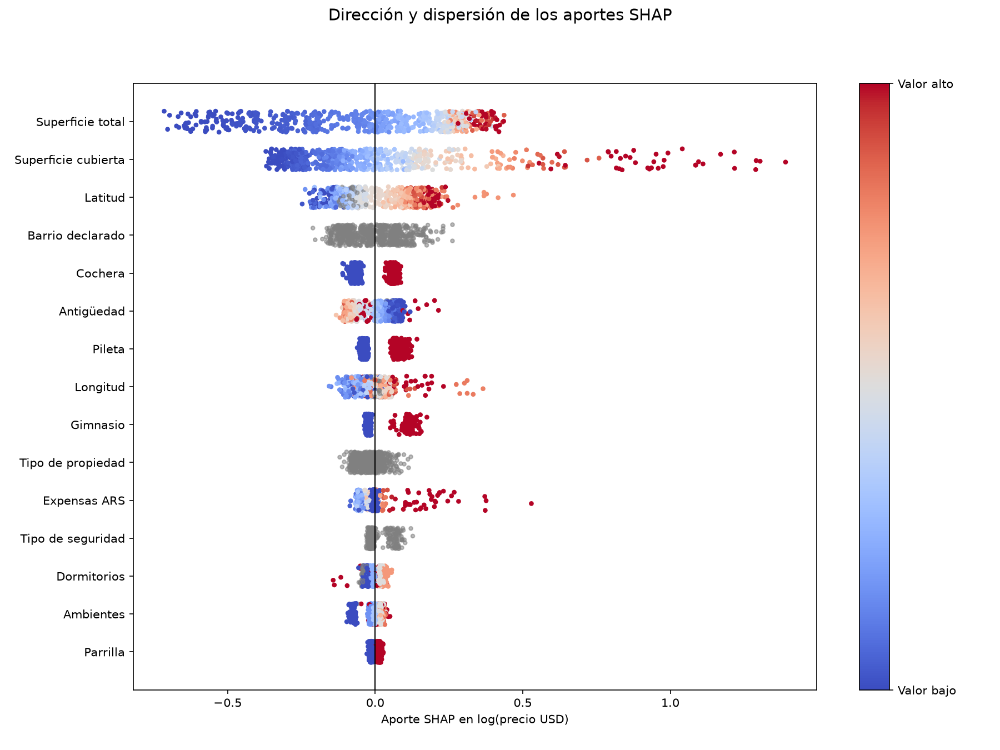

Resultado actual
SpatialValue estima el precio publicado en USD de una vivienda individual. Se mantiene CatBoost general, entrenado con logaritmo del precio y pérdida RMSE. Las variables nuevas y los modelos por tipo no mejoraron la validación y quedaron fuera del flujo activo.
| Métrica | Resultado | Cómo interpretarla |
|---|---|---|
| MAE | USD 135.473 | Tamaño medio del error en dólares |
| RMSE | USD 609.222 | Penaliza más los errores grandes |
| MAPE | 21,48% | Error porcentual absoluto promedio |
| Mediana | 16,10% | La mitad de los errores queda por debajo |
| P90 | 46,68% | Nueve de cada diez quedan por debajo en esta prueba |
| R² | 0,508 | Comparación con la media observada del test; no es porcentaje de aciertos |
La evaluación usa 2701 publicaciones de entrenamiento y 674 de prueba, con 600 grupos de prueba y cero grupos compartidos. La mediana de error es 16,10%, pero hay errores grandes que elevan el promedio. MAPE de 21,48% no significa 78,52% de aciertos.
La baja de MAPE desde 23,69% a 21,48% se explica por excluir una oferta verificada de dos casas linderas. Las predicciones de las 674 viviendas comunes permanecieron iguales. Durante esta limpieza volvieron a compararse una por una: diferencia máxima USD 0.
Los datos ya se exploraron durante el desarrollo. Estos resultados describen esta muestra; la comprobación final requiere propiedades futuras verificadas. No hay precios de cierre con los que medir el error respecto de ventas efectivas.
Qué cambiamos desde que incorporamos CatBoost
1. Unificamos el recorrido de los datos
La API y el evaluador comparten carga, limpieza, variables y construcción de CatBoost en modelo.py. El evaluador no importa FastAPI, no abre Neon y no usa el precio estimado por la IA como etiqueta. La fuente actual es la copia local del CSV que aportaste; no es una extracción nueva de PostgreSQL.
2. Revisamos la limpieza
Se preservaron ceros válidos y datos desconocidos; desconocido no se convierte en ausencia. Se rechazan alquileres, operaciones no confirmadas, precios no positivos, superficies incompatibles y características incoherentes. La categoría codificada en el anuncio corrige tipos mal copiados. El CSV permanece intacto salvo las seis republicaciones verificadas eliminadas en la etapa anterior.
3. Contrastamos anuncios problemáticos
Se excluyeron desarrollos completos, ventas en bloque, una superficie contradictoria y la oferta de dos casas linderas. Se utilizaron fuentes e identidad del anuncio, no un umbral de error del modelo. Los casos que no pudieron verificarse se conservaron. No se corrigieron precios históricos utilizando precios actuales.
4. Controlamos las republicaciones
Se verificaron seis copias y se conservaron respaldos. El catálogo mantiene IDs, decisiones y huellas de identidad. Además, las publicaciones con dirección o GPS y estructura semejantes se agrupan al separar entrenamiento y prueba. Esa agrupación es preventiva: puede reunir unidades diferentes y no demuestra identidad catastral.
5. Mejoramos la evaluación
Agregamos MAE, RMSE, MAPE, R², cinco folds por grupos y percentiles. El procesamiento de cada modelo aprende únicamente de su entrenamiento. Se incluyó una referencia sencilla que siempre predice la mediana de los precios de entrenamiento.
6. Probamos cómo tratar el precio
Se compararon precio directo, logaritmo y pérdidas RMSE, MAE y Huber. El logaritmo convierte diferencias multiplicativas en diferencias aditivas: 100.000 a 120.000 y 1.000.000 a 1.200.000 tienen la misma razón 1,2. Se conservó log + RMSE; ninguna alternativa ganó todos los indicadores.
7. Ajustamos los árboles
Se compararon 25 configuraciones con folds internos. Quedaron profundidad 6, 1.400 árboles, tasa 0,03 y L2 igual a 1. El ajuste redujo errores en dólares en el test histórico, pero su MAPE aumentó ligeramente. No se ocultó esa diferencia.
8. Agregamos explicaciones SHAP
Se calculan aportes nativos de CatBoost para cada propiedad y se verifica que, sumados al valor base, reconstruyan la predicción. Ayudan a entender el comportamiento del modelo; no prueban que una variable cause un precio.
9. Evaluamos por segmento
Se midieron tipos, barrios, rangos de precio y cruces tipo por precio, con conteos de publicaciones y grupos. Se incluyeron sesgo, mediana y porcentajes dentro de márgenes. Con menos de cinco ejemplos no se publica una métrica agregada; con menos de treinta grupos se marca muestra pequeña. Son umbrales operativos.
10. Probamos cuatro revisiones separadas
Se verificó el caso extremo, se probaron límites de barrios y coordenadas, nueve variables de superficie y especialistas por tipo. La comparación incluyó seis alternativas y mantuvo el mismo test común. Ninguna mejoró el MAPE interno; se mantuvo el modelo general.
11. Simplificamos el proyecto
Se archivaron código e informes de experimentos descartados en un solo ZIP verificado. El flujo activo queda en modelo.py, evaluar_dataset.py, generar_informe.py y test_modelo.py. Se conservan la configuración, el CSV y el catálogo de identidad. Los nuevos análisis describen el mismo modelo y no seleccionan variables usando el test.
CatBoost construye árboles en secuencia: cada etapa ajusta lo que la combinación anterior todavía no explica. Las categorías se entregan como texto normalizado y los números desconocidos como NaN. Al entrenar se aplica log(precio); al responder se aplica la inversa y se devuelven dólares. Más árboles no garantizan más precisión; por eso elegimos parámetros con validación interna.
| Configuración actual | Valor |
|---|---|
| iterations | 1400 |
| depth | 6 |
| learning_rate | 0.03 |
| loss_function | RMSE |
| l2_leaf_reg | 1 |
| Objetivo | log(precio USD) |
| Semilla CatBoost | 42 |
| Variables | 30 |
Calidad y cobertura de los datos
El CSV de trabajo tiene 3917 publicaciones y quedan 3375 válidas después de la limpieza. Conservamos tres gráficos para revisar representación, faltantes y precios. Los extremos no se eliminan automáticamente por ser caros o grandes.
1. Representación de casas departamentos y PH
Cada barra cuenta ejemplos válidos de un tipo de propiedad.

Qué aprendemos. PH tiene menos datos que casas y departamentos. Esa cobertura debe acompañar la comparación de errores; no se inventan ejemplos para equilibrar la regresión.
2. Datos faltantes por variable
Se cuenta NaN en números y la etiqueta no especificada en categorías.

Qué aprendemos. Desconocido no significa ausente: una antigüedad desconocida no se convierte en cero años. Una columna completa tampoco garantiza calidad; SUM figura verdadero en todos los valores conocidos y requiere revisar su origen.
3. Distribución de precios publicados
El eje logarítmico permite ver viviendas económicas y muy caras en el mismo gráfico.

Qué aprendemos. La cola de precios altos ayuda a explicar por qué pocos errores pueden dominar RMSE y MAE. No se recorta esa cola para mejorar métricas. CatBoost aprende log(precio) y luego vuelve a dólares.
Qué tan cerca quedan las estimaciones
Los siguientes gráficos usan las publicaciones de prueba y conservan todos sus errores. Los valores son precios publicados, no precios de cierre.
4. Precio observado frente a estimado
Cada punto es una vivienda. La diagonal representa una estimación exacta; ambos ejes son logarítmicos.

Qué aprendemos. Por encima se sobreestima y por debajo se subestima. La dispersión del extremo caro importa especialmente para los errores en dólares.
La referencia sencilla asigna a todas las viviendas la mediana de precios de entrenamiento. Menor error es mejor; en R², mayor es mejor. R² puede ser negativo y no representa porcentaje de aciertos.
| Métrica | CatBoost actual | Referencia mediana |
|---|---|---|
| MAE USD | 135.473 | 292.514 |
| RMSE USD | 609.222 | 890.069 |
| MAPE % | 21,48 | 69,04 |
| R² | 0,508 | -0,050 |
5. Mediana y cola de errores
P50 es la mediana; P90 deja por debajo el 90% de los casos y P100 es el máximo observado.

Qué aprendemos. P50 es 16,10% y P90 es 46,68%. La distancia entre ambos muestra cuánto se amplía el error en los casos difíciles.
| Margen respecto del precio publicado | Publicaciones de prueba dentro del margen |
|---|---|
| ±10% | 34,9% |
| ±20% | 59,6% |
| ±30% | 76,1% |
Estos márgenes describen frecuencias de esta muestra; no son probabilidades garantizadas para una propiedad nueva.
Estabilidad y riesgo de sobreajuste
La validación cruzada utiliza solo el conjunto de desarrollo. Las publicaciones de un mismo grupo permanecen juntas para reducir el riesgo de evaluar copias ya vistas.
6. Variación entre cinco particiones internas
Cada fold valida grupos que su modelo no vio al entrenar. Todos pertenecen al conjunto de desarrollo.

Qué aprendemos. La media es 21,76% y el desvío entre folds 1,04 puntos. El desvío no es un intervalo de confianza y esta CV no sustituye una muestra externa.
| Conjunto | MAPE |
|---|---|
| Entrenamiento aparente | 13,69% |
| Prueba reservada | 21,48% |
El error en ejemplos usados para aprender es optimista. La diferencia con prueba obliga a vigilar sobreajuste. La curva de árboles, calculada en una validación interna separada, queda registrada en metricas.json; no se usa este test para elegir dónde detener el entrenamiento.
Dónde funciona mejor y dónde falla
Los segmentos utilizan las mismas predicciones de prueba. El rango se define con el precio observado solo para diagnosticar; ese precio no se conoce cuando se tasa una vivienda nueva.
7. Error por tipo de propiedad
MAPE promedia errores absolutos; la mediana es menos sensible a un caso extremo. n cuenta publicaciones y g grupos heurísticos.

Qué aprendemos. Las casas conservan más error que departamentos y PH. La diferencia entre MAPE y mediana muestra la influencia de los errores extremos.
El asterisco marca menos de 30 grupos; superar ese número no garantiza estabilidad. Se omiten métricas con menos de cinco publicaciones de prueba.
8. Error por rango de precio observado
MAPE promedia errores absolutos; la mediana es menos sensible a un caso extremo. n cuenta publicaciones y g grupos heurísticos.

Qué aprendemos. La precisión cambia según el precio. En el extremo caro hay menos grupos y más incertidumbre; el promedio global no describe por igual todos los rangos.
El asterisco marca menos de 30 grupos; superar ese número no garantiza estabilidad. Se omiten métricas con menos de cinco publicaciones de prueba.
El sesgo conserva el signo: positivo significa sobreestimación y negativo subestimación. Los signos pueden cancelarse; no reemplaza al MAPE ni sirve como corrección basada en un precio todavía desconocido.
| Precio observado USD | Grupos de prueba | Sesgo porcentual medio |
|---|---|---|
| Hasta 100 mil | 84 | 23,78% |
| 100 a 250 mil | 259 | 5,48% |
| 250 a 500 mil | 174 | -0,87% |
| 500 mil a 1 millón | 70 | -2,05% |
| Más de 1 millón | 26 | -27,32% |
Las tablas completas por barrio y por tipo/precio se conservan en los anexos, con sus tamaños de muestra.
Cómo usa las variables el modelo
SHAP reparte la diferencia entre el valor base y cada predicción entre las variables. Se verifica que la suma reconstruya la salida y, después de invertir la transformación, los dólares. Las filas se ordenan por influencia absoluta media.
9. Dirección y dispersión de los aportes SHAP
Cada punto es una publicación. A la derecha el aporte aumenta la salida; a la izquierda la reduce. Rojo indica un valor numérico alto y azul bajo.

Qué aprendemos. Las categorías y los faltantes aparecen en gris. Los colores se normalizan dentro de cada variable; no se comparan valores de superficie con valores de antigüedad. Los aportes están en log(precio), no en dólares.
Las variables correlacionadas pueden repartirse la atribución. Un aporte positivo no implica que la variable cause un mayor precio de mercado.
Experimentos y decisiones que conservamos
Conservamos las conclusiones principales en una tabla. Los resultados históricos tienen poblaciones y protocolos distintos; no forman una única curva de mejora. El detalle permanece en el historial comprimido.
| Revisión | Resultado principal | Decisión |
|---|---|---|
| Tratamiento del precio | MAPE interno histórico: directo RMSE 26,84%; log RMSE 22,00%; log MAE 21,87%. Cifras redondeadas con 600 árboles. | Mantener log + RMSE: ninguna opción ganó todos los indicadores y la candidata MAE empeoró en prueba. |
| 25 configuraciones de árboles | MAE histórico: USD 143.537 → 140.101. MAPE: 23,50% → 23,69%. Mismo test de 675 publicaciones. | Mantener profundidad 6 y 1.400 árboles, elegidos en validación interna. Mejoraron errores en USD, no todas las métricas. |
| Oferta de dos casas linderas | MAPE 23,69% → 21,48% al pasar de 675 a 674 publicaciones. | Excluir por alcance verificado. Es un cambio de población; las otras predicciones quedaron iguales. |
| Ubicación, superficies y especialistas | Se probaron seis variantes. Ninguna mejoró el MAPE de la base en sus folds internos de selección. | Conservar el modelo general. La CV actual usa otro reparto y no se mezcla con la CV de este experimento. |
La revisión geográfica encontró 150 discrepancias entre GPS y texto, 98 ubicaciones recuperables solo por GPS y 170 coordenadas centrales genéricas. Requieren mejorar la fuente; cruzar un punto con límites de barrios no certifica que el punto sea correcto.
Qué falta para mejorar con evidencia
El modelo actual está limitado por la calidad y cobertura de los datos. Los siguientes trabajos deben compararse en desarrollo y confirmarse en una extracción futura verificada, manteniendo control de republicaciones.
- Separar terreno, total construido y cubierta, con unidades y fuente. Es necesario para revisar las 37 casas sin cambiar de forma inconsistente lo que acepta la API.
- Mejorar barrio y GPS en el origen; distinguir ubicación exacta, aproximada y genérica. No reemplazar automáticamente una dirección confiable por un GPS no verificado.
- Verificar moneda, precio individual y alcance de los anuncios. Solicitar precio explícito o marcarlo desconocido cuando sea a consultar.
- Ampliar cobertura de segmentos caros y categorías con pocos grupos. Agregar información relevante de calidad y estado con una definición consistente.
- Obtener una extracción futura y probar por fecha y por zonas reservadas. Repartir de nuevo este mismo CSV no lo vuelve una validación externa.
No se informa error respecto de ventas cerradas, deriva futura, precisión por cada barrio completo ni un intervalo individual de tasación: faltan datos o una validación apropiada. Tampoco se realizan pruebas de normalidad como requisito de CatBoost, porque su entrenamiento con árboles no exige esa distribución del precio.
Tablas completas y casos para revisar
Ver barrios, cruces, casos e intervalos
Cobertura completa por etiqueta de barrio. Las métricas se omiten con menos de cinco publicaciones de prueba; no se reemplazan por cero.
| Etiqueta | Entrena | Prueba | Grupos prueba | MAPE | Mediana | Aviso |
|---|---|---|---|---|---|---|
| Agronomia | 9 | 3 | 3 | Sin métrica | — | Muestra pequeña |
| Almagro | 78 | 11 | 11 | 12,59% | 8,73% | Muestra pequeña |
| Almagro Norte | 1 | 0 | 0 | Sin métrica | — | Muestra pequeña |
| Antonio J. De | 0 | 1 | 1 | Sin métrica | — | Muestra pequeña |
| Avda. 3867. Entre Estomba Y Tronador | 1 | 0 | 0 | Sin métrica | — | Muestra pequeña |
| B. Y Avenida Eva Peron | 1 | 0 | 0 | Sin métrica | — | Muestra pequeña |
| Balvanera | 58 | 17 | 16 | 29,24% | 18,97% | Muestra pequeña |
| Barracas | 43 | 13 | 12 | 24,44% | 18,72% | Muestra pequeña |
| Barrio Norte | 1 | 0 | 0 | Sin métrica | — | Muestra pequeña |
| Barrio Parque | 4 | 5 | 4 | 31,34% | 11,72% | Muestra pequeña |
| Belgrano | 152 | 37 | 33 | 18,19% | 11,85% | |
| Belgrano C | 1 | 0 | 0 | Sin métrica | — | Muestra pequeña |
| Belgrano Chico | 6 | 0 | 0 | Sin métrica | — | Muestra pequeña |
| Belgrano R | 29 | 10 | 8 | 58,71% | 58,64% | Muestra pequeña |
| Boedo | 31 | 3 | 3 | Sin métrica | — | Muestra pequeña |
| Botanico | 1 | 0 | 0 | Sin métrica | — | Muestra pequeña |
| Caba | 1 | 0 | 0 | Sin métrica | — | Muestra pequeña |
| Caballito | 121 | 30 | 30 | 17,61% | 13,84% | |
| Caballito Norte | 3 | 2 | 1 | Sin métrica | — | Muestra pequeña |
| Capital Federal | 404 | 87 | 86 | 29,85% | 24,36% | |
| Centro / Microcentro | 1 | 0 | 0 | Sin métrica | — | Muestra pequeña |
| Chacarita | 22 | 5 | 5 | 19,99% | 13,24% | Muestra pequeña |
| Ciudad Autonoma De Buenos Aires | 1 | 0 | 0 | Sin métrica | — | Muestra pequeña |
| Coghlan | 25 | 10 | 8 | 9,14% | 8,76% | Muestra pequeña |
| Colegiales | 69 | 14 | 13 | 12,63% | 9,37% | Muestra pequeña |
| Congreso | 1 | 0 | 0 | Sin métrica | — | Muestra pequeña |
| Constitucion | 11 | 6 | 6 | 42,04% | 30,24% | Muestra pequeña |
| Devoto | 1 | 2 | 2 | Sin métrica | — | Muestra pequeña |
| E/ Castanares Y Zelarrayan | 0 | 1 | 1 | Sin métrica | — | Muestra pequeña |
| Entre Miller Y Valdenegro | 0 | 1 | 1 | Sin métrica | — | Muestra pequeña |
| Flores | 68 | 12 | 12 | 12,60% | 11,71% | Muestra pequeña |
| Flores Norte | 1 | 0 | 0 | Sin métrica | — | Muestra pequeña |
| Floresta | 20 | 7 | 7 | 10,79% | 6,50% | Muestra pequeña |
| Horacio | 1 | 0 | 0 | Sin métrica | — | Muestra pequeña |
| Jose G. De | 2 | 0 | 0 | Sin métrica | — | Muestra pequeña |
| Juan B. | 1 | 0 | 0 | Sin métrica | — | Muestra pequeña |
| La Boca | 11 | 0 | 0 | Sin métrica | — | Muestra pequeña |
| La Paternal | 13 | 1 | 1 | Sin métrica | — | Muestra pequeña |
| Las Canitas | 2 | 4 | 2 | Sin métrica | — | Muestra pequeña |
| Liniers | 29 | 7 | 7 | 19,24% | 17,90% | Muestra pequeña |
| Lomas De Nunez | 2 | 0 | 0 | Sin métrica | — | Muestra pequeña |
| Mataderos | 36 | 7 | 6 | 19,66% | 21,17% | Muestra pequeña |
| Monserrat | 29 | 8 | 7 | 17,17% | 14,21% | Muestra pequeña |
| Monte Castro | 24 | 8 | 7 | 19,73% | 16,83% | Muestra pequeña |
| Naon | 0 | 1 | 1 | Sin métrica | — | Muestra pequeña |
| No Especificada | 1 | 0 | 0 | Sin métrica | — | Muestra pequeña |
| Norberto | 1 | 0 | 0 | Sin métrica | — | Muestra pequeña |
| Nueva Pompeya | 11 | 4 | 4 | Sin métrica | — | Muestra pequeña |
| Nunez | 74 | 22 | 20 | 17,03% | 12,31% | Muestra pequeña |
| Palermo | 313 | 68 | 57 | 20,24% | 17,98% | |
| Palermo Chico | 5 | 2 | 2 | Sin métrica | — | Muestra pequeña |
| Palermo Hollywood | 3 | 1 | 1 | Sin métrica | — | Muestra pequeña |
| Palermo Soho | 7 | 0 | 0 | Sin métrica | — | Muestra pequeña |
| Parque Avellaneda | 23 | 6 | 5 | 22,51% | 13,16% | Muestra pequeña |
| Parque Centenario | 1 | 0 | 0 | Sin métrica | — | Muestra pequeña |
| Parque Chacabuco | 26 | 12 | 11 | 26,75% | 20,38% | Muestra pequeña |
| Parque Chas | 25 | 2 | 2 | Sin métrica | — | Muestra pequeña |
| Parque Patricios | 17 | 0 | 0 | Sin métrica | — | Muestra pequeña |
| Paternal | 1 | 0 | 0 | Sin métrica | — | Muestra pequeña |
| Plaza San Martin | 0 | 1 | 1 | Sin métrica | — | Muestra pequeña |
| Pompeya | 5 | 1 | 1 | Sin métrica | — | Muestra pequeña |
| Puerto Madero | 35 | 9 | 9 | 23,79% | 20,29% | Muestra pequeña |
| Ramon Y Zapiola | 1 | 0 | 0 | Sin métrica | — | Muestra pequeña |
| Recoleta | 126 | 24 | 23 | 22,99% | 15,96% | Muestra pequeña |
| Retiro | 34 | 6 | 5 | 27,79% | 13,17% | Muestra pequeña |
| Saavedra | 58 | 17 | 16 | 13,67% | 10,47% | Muestra pequeña |
| San Cristobal | 23 | 10 | 8 | 9,90% | 8,18% | Muestra pequeña |
| San Nicolas | 18 | 6 | 6 | 20,82% | 19,95% | Muestra pequeña |
| San Telmo | 17 | 6 | 5 | 35,30% | 35,11% | Muestra pequeña |
| Severo Garcia Gde.De | 0 | 1 | 1 | Sin métrica | — | Muestra pequeña |
| Severo Garcia Gde.De 5800. Entre Pola Y Fonrouge | 1 | 0 | 0 | Sin métrica | — | Muestra pequeña |
| Severo Garcia Gde.De 6000. Entre Larrazabal | 1 | 0 | 0 | Sin métrica | — | Muestra pequeña |
| Severo Garcia Gde.De Y Zelada | 0 | 1 | 1 | Sin métrica | — | Muestra pequeña |
| Velez Sarsfield | 20 | 5 | 4 | 13,31% | 16,32% | Muestra pequeña |
| Versalles | 7 | 4 | 4 | Sin métrica | — | Muestra pequeña |
| Villa Crespo | 56 | 14 | 13 | 15,18% | 14,41% | Muestra pequeña |
| Villa Del Parque | 58 | 21 | 19 | 14,14% | 7,67% | Muestra pequeña |
| Villa Devoto | 112 | 41 | 34 | 22,33% | 19,50% | |
| Villa General Mitre | 21 | 8 | 8 | 14,34% | 10,84% | Muestra pequeña |
| Villa Lugano | 24 | 8 | 6 | 20,57% | 17,38% | Muestra pequeña |
| Villa Luro | 24 | 8 | 8 | 19,14% | 15,11% | Muestra pequeña |
| Villa Ortuzar | 21 | 6 | 6 | 13,60% | 12,83% | Muestra pequeña |
| Villa Pueyrredon | 67 | 17 | 16 | 9,77% | 8,66% | Muestra pequeña |
| Villa Real | 4 | 0 | 0 | Sin métrica | — | Muestra pequeña |
| Villa Riachuelo | 5 | 1 | 1 | Sin métrica | — | Muestra pequeña |
| Villa Santa Rita | 19 | 5 | 5 | 22,84% | 24,81% | Muestra pequeña |
| Villa Soldati | 2 | 1 | 1 | Sin métrica | — | Muestra pequeña |
| Villa Urquiza | 119 | 23 | 23 | 12,19% | 6,67% | Muestra pequeña |
| Tipo | Precio observado USD | Prueba | Grupos | MAPE | MAE USD |
|---|---|---|---|---|---|
| Casa | Hasta 100 mil | 3 | 3 | Sin métrica | — |
| Casa | 100 a 250 mil | 48 | 42 | 28,87% | 58.098 |
| Casa | 250 a 500 mil | 106 | 91 | 20,34% | 71.511 |
| Casa | 500 mil a 1 millón | 55 | 47 | 25,59% | 186.298 |
| Casa | Más de 1 millón | 36 | 22 | 34,54% | 1.394.172 |
| Departamento | Hasta 100 mil | 64 | 62 | 22,20% | 17.010 |
| Departamento | 100 a 250 mil | 135 | 131 | 16,23% | 27.485 |
| Departamento | 250 a 500 mil | 53 | 52 | 19,78% | 70.459 |
| Departamento | 500 mil a 1 millón | 24 | 22 | 28,12% | 177.415 |
| Departamento | Más de 1 millón | 4 | 4 | Sin métrica | — |
| Ph | Hasta 100 mil | 20 | 19 | 39,44% | 29.242 |
| Ph | 100 a 250 mil | 93 | 86 | 14,29% | 24.585 |
| Ph | 250 a 500 mil | 32 | 31 | 15,87% | 53.649 |
| Ph | 500 mil a 1 millón | 1 | 1 | Sin métrica | — |
| Ph | Más de 1 millón | 0 | 0 | Sin métrica | — |
Un grupo puede aparecer en diferentes segmentos si sus anuncios tienen precios o etiquetas distintos. Sus conteos no siempre son aditivos. Los grupos son heurísticos y pueden incluir unidades diferentes de un mismo edificio o cuadra.
Diez errores porcentuales mayores del modelo actual. Son candidatos a revisión; no justifican una eliminación automática.
| ID | Tipo | Observado USD | Estimado USD | Error absoluto % |
|---|---|---|---|---|
| zp-59538298 | departamento | 57.000 | 160.460 | 181,51 |
| zp-55721444 | casa | 265.000 | 654.784 | 147,09 |
| zp-59576966 | casa | 198.000 | 463.119 | 133,90 |
| zp-58491831 | ph | 85.000 | 189.631 | 123,10 |
| zp-60249850 | departamento | 161.000 | 342.326 | 112,62 |
| zp-60062828 | casa | 195.000 | 397.864 | 104,03 |
| zp-59844849 | casa | 715.000 | 1.454.681 | 103,45 |
| zp-59282342 | departamento | 550.000 | 1.112.373 | 102,25 |
| zp-60358950 | ph | 55.000 | 108.472 | 97,22 |
| zp-59319487 | casa | 800.000 | 1.573.057 | 96,63 |
Diez errores en dólares mayores. Pueden ser diferentes de los que dominan el error porcentual.
| ID | Observado USD | Estimado USD | Error USD |
|---|---|---|---|
| zp-60083803 | 12.000.000 | 2.148.907 | 9.851.093 |
| zp-59748319 | 10.000.000 | 1.774.790 | 8.225.210 |
| zp-59798371 | 8.500.000 | 3.361.264 | 5.138.736 |
| zp-59753704 | 5.500.000 | 1.549.512 | 3.950.488 |
| zp-59772424 | 3.900.000 | 986.115 | 2.913.885 |
| zp-58320270 | 4.300.000 | 1.856.765 | 2.443.235 |
| zp-59768669 | 3.900.000 | 1.477.114 | 2.422.886 |
| zp-58894887 | 4.300.000 | 2.476.035 | 1.823.965 |
| zp-60027570 | 4.300.000 | 2.862.645 | 1.437.355 |
| zp-57718089 | 2.000.000 | 832.955 | 1.167.045 |
Intervalos bootstrap percentiles con el modelo fijo. No son intervalos de precio individual ni incorporan incertidumbre de volver a entrenar.
| Medida | Límite inferior 95% | Límite superior 95% |
|---|---|---|
| mape_porcentaje | 19,76 | 22,97 |
| mae_usd | 86.314,45 | 195.329,14 |
| rmse_usd | 225.955,31 | 904.126,84 |
| mediana_error_porcentual | 13,75 | 17,35 |
Glosario y recorrido de los archivos
| Término | Explicación |
|---|---|
| Entrenamiento | Ejemplos que el modelo usa para aprender. |
| Prueba o test | Ejemplos reservados para medir el resultado; este test ya fue explorado durante el proyecto. |
| Validación cruzada | Varios repartos internos para medir variación sin aprender de la partición que se está validando. |
| Grupo | Publicaciones vinculadas de forma conservadora por dirección o GPS y estructura; no garantiza identidad. |
| Sobreajuste | Aprender detalles del entrenamiento que no ayudan a predecir ejemplos nuevos. |
| Sesgo con signo | Promedio de sobreestimaciones y subestimaciones; los signos pueden cancelarse. |
| MAE | Error absoluto medio en prueba: USD 135.473. |
| MAPE | Error porcentual absoluto promedio en prueba: 21,48%. |
| RMSE | Raíz del error cuadrático medio en prueba: USD 609.222. Penaliza más los errores grandes. |
| R² | Resultado en prueba: 0,508. Compara con predecir la media; no es porcentaje de aciertos. |
| SHAP | Reparto de la predicción entre aportes del modelo. No demuestra causalidad. |
| Permutación | Mezclar una característica para medir cuánto depende de ella el modelo fijo. |
| Bootstrap por grupos | Remuestrear grupos completos para explorar la variación de una medida en esta muestra. |
| Archivo o carpeta | Para qué sirve |
|---|---|
| modelo.py | Carga, limpieza, variables, CatBoost, grupos y métricas compartidas con la API. |
| evaluar_dataset.py | Entrena y evalúa la configuración vigente; calcula SHAP, curva, bootstrap y permutación. |
| generar_informe.py | Genera este documento y cada gráfico por separado a partir de resultados verificados. |
| test_modelo.py | Pruebas de limpieza, deduplicación, separación por grupos, métricas y reconstrucción SHAP. |
| configuracion_catboost.json | Los parámetros activos; no se cambiaron durante la limpieza. |
| dataset/propiedades.csv | La fuente de trabajo; no se alteró durante esta limpieza. |
| dataset/revision_republicaciones.json | Evidencia e identidad de copias verificadas; participa en la limpieza. |
| auditoria/actual | Métricas, predicciones y matrices necesarias para reproducir el informe sin entrenar. |
| auditoria/historial_catboost.zip | Resultados y código anteriores, revisión de fuentes y respaldo original; archivo de solo lectura. |
| informe/graficos | Una imagen PNG por análisis; cada una puede abrirse o compartirse individualmente. |
Para repetir la evaluación: PYTHONPATH=src/pages/Apis python -m modelo_ia.evaluar_dataset. Para regenerar solo el informe: añadir --solo-informe. Para las pruebas: PYTHONPATH=src/pages/Apis python -m unittest modelo_ia.test_modelo -v. El entrenamiento de la API continúa usando las mismas funciones; no se reinició ni desplegó ningún servicio.
Fuentes y reproducibilidad
- CatBoost y aportes SHAP
- Métricas de regresión en scikit learn
- Permutación e información correlacionada
- Límites oficiales de barrios BA Data
- Oferta de dos casas linderas revisada
- Ejemplo de casa con varias plantas y cubierta mayor que total
Las páginas de anuncios se contrastaron durante las revisiones del 28 de octubre de 2026; el contenido recuperado puede tener un rastreo anterior. Los precios actuales no se usaron para sustituir etiquetas históricas. Las decisiones completas y el respaldo previo a seis eliminaciones están dentro del historial comprimido.
| Control | Valor |
|---|---|
| archivo_sha256 | cb2db1c1b83e8937d3a7088470a2fb6ca59190b75d2c8fadb358aa07eacd08b6 |
| preparacion_sha256 | d164a4ed429d4bec85af21b16b6cd53fa8eab44ec5e22011adc5f9374f854d44 |
| codigo_modelo_sha256 | 7cfd002ad57514fce89666060e9789b9f86b4ab05686b81d9cd9575f96feeb4c |
| revision_republicaciones_sha256 | 69afa5ba14a273bfe8229aaa74e71b044ba6eccba0ada4057b7f9f73183695ff |
| Versión catboost | 1.2.10 |
| Versión scikit-learn | 1.9.1 |
| Versión numpy | 2.5.4 |
| Versión pandas | 3.1.0 |